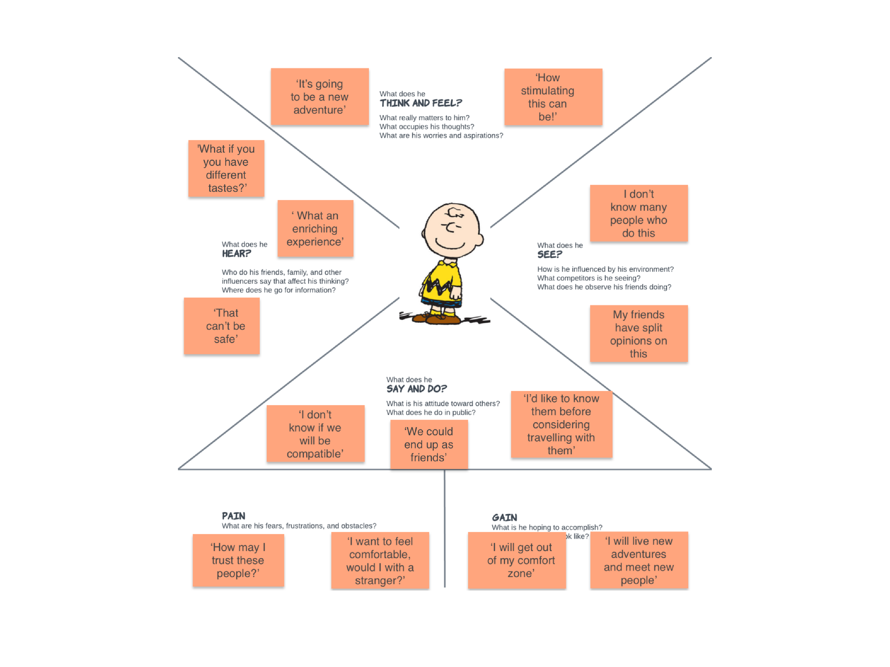
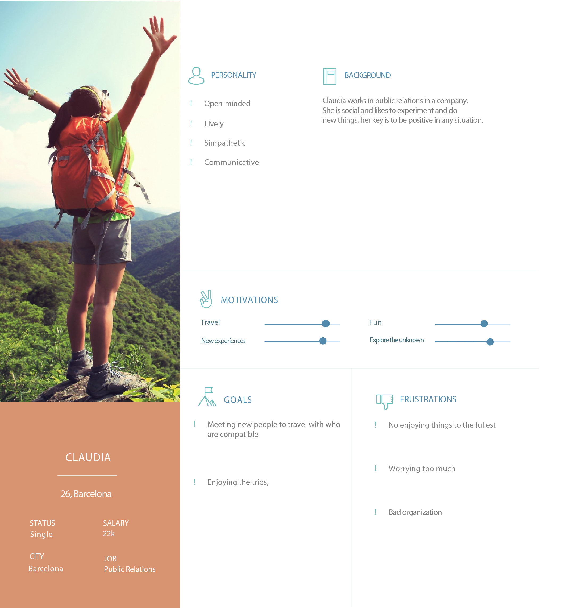

We have all been in the situation where we've wanted to travel to a specific destination with some friends, relatives or our couple but it seemed impossible or hard to get them to go due to factors such as budget, time of the year or desirability of the place to visit, because hey, we all have our own lives and schedules. Here is where Truddy came into a concept to fix this.
The target in this case is quite specific, professional people aged 24-36. This persona is someone who is open to new experiences and getting out of his/her comfort zone.
A social platform where people interested in finding travel buddies can match people with similar interests. With Truddy, people can easily talk through the chat to get to know about each other, create that engagement and keep the spark on. Considering how busy this user usually is, the app also helps with the trip organization by allowing to create an itinerary with the different activities all travel buddies are interested in fullfilling.
Add a destination you wish to go with the dates and filters for the type of user you would like to travel with so that only users with the characteristics you desire can join you.
Before travelling it is important to learn about each other as affinity is key. The chat allows to do so, users can talk with potential travel buddies via message,call or even videocall and learn about each's personalities and see whether there is compability.

Now, we all know that time is needed to organize a trip, things are made simpler with the itinerary planner, so everything is integrated. Users can chat and organize at the same time. Spots to see, new activities they didn't know about, they can all contribute and easily schedule the different activities they wish to carry out throughout the trip.
A few months ago, I was having a conversation with my colleagues during a lunch break about holidays, it came as a surprised that, sometimes, many of them had it hard to go to some destinations because they had no one to go with. In terms of people, they were referring to their friends, family or couple. It was quite interesting because we have it easier than ever to travel for affordable prices so I thought, why not try to go with other people?
To dig deeper into this matter and get measurable data to validate my idea, I conducted a survey to ensure this was a real problem for a significant number of people and I got some interesting findings out of 61 respondents:
Also:
Interestingly, about 21% of the them said they would go on a trip with new people/strangers and about 33% would consider it:
To understand more about these users perceptions and why there was an important percentage (33%) that was dubious about it, I performed 4 semi-structured interviews with 4 of those respondents to help me understand their underlying concerns regarding my idea as well as 3 other interviews with people that responded that they would likely go for it to understand their motivations:
I put the findings on notes to help me identify patterns which helped me gauge important pain points and opportunities for the ideation process:
So I concluded that this set of dubious interviewees were concerned about not knowing the other people’s interests, personalities’ and way of living before considering them compatible to travel with and trusting them. I used these insights and turned them actionable in order to try to also target the more reluctant people. But before that, I created an Empathy map to try to empathize more with these people:

This helped me defining and shaping my main target who would be a user with the following set of traits: the more adventurous type looking to go outside of his/her confort zone. This is someone who is willing to give it a chance as long as they have the opportunity to know their potential travel buddies before.
From here, by putting all of these insights together, I was able to understand the problems to address:
So to tackle the identified issues, I thought of the following solution:
Now, focusing on the design of the App, and considering what would be the core values of it, friendship & trust, I defined this information arquitecture after using the card sorting method to help me figure the organization of the app's information:

Based on the information arquitecture and other methods such as the user flow diagram, I did some sketches and turned them into this prototype in order to test the main features: Adding a new trip applying filters, and chatting with travel buddies to organize the itinerary of a scheduled trip.
To make sure the design was valid, I conducted a test with 4 testers. From the results, it was clear that the idea of having the 2 key features (the chat and the itinerary planner) integrated within the chat was an utter disaster, 3 out 4 of the testers were not able to guess how to access the itinerary planner to complete task 2, and only managed to get there with trouble. I thought I had a great idea but it seems like it wasn’t or maybe I failed at the information arquitecture.
The percentage of participants who correctly achieved the goal was 1 with difficulty, it was a critical error.
To reduce the learning curve and design the information in a more logical manner, I had to simplify my workflow so I next iterated on the design and modified it.
In this new design you can see how I included the itinerary within the trip file as it seemed to make more sense and removed it from the chat. In a second testing round users managed to easily complete the same task:
For the design of the visuals, I started off with this moodboard which helped me setting the tone of the App. Based on the values of friendship and trust, I decided to go for blue-green and orange hues to convey trust, security & serenity (blue-green colours), strong emotions, youthful & fun (orange colours).

In terms of typography, after many combinations, I decided to go for "Simplifica" for the App title and "Montserrat" for the rest, because of its clean, modern and easy to read design.
You can try the final prototype here:
Some of the most important takeaways from this project were the incremental improvements I achieved through iteration.
I also learned about the importance of usability testing in early stages. In a fast working environment, where agile methods are implemented and product features need to be released in short schedules, it is crucial to work in rapid iterative cycles and obtain rapid feedback to make decisions.
And also, how important is it to consider success metrics when testing products to help with decision-making.